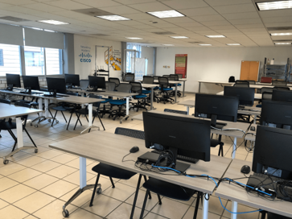
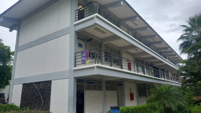
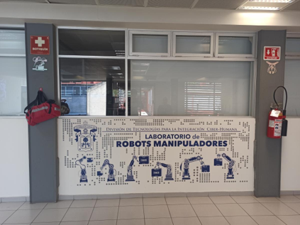
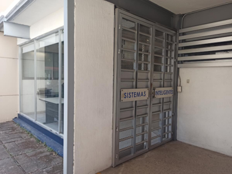

Laboratorio de Redes Cisco
Encargado:
Carlos Reyes Rios
Actividades:
Su función es proveer el aprendizaje teórico-práctico y permitir el aprovechamiento y la cualificación de los conocimientos requeridos para analizar, diseñar e instalar topologías de redes LAN, además de resolver problemas y monitorizar los dispositivos de red para su respectiva gestión en un entorno corporativo.

Laboratorios de cómputo
Encargados:
Actividades:

Laboratorios de robots manipuladores
Actividades:
El objetivo principal del laboratorio es realizar prácticas para diversas clases de Ingeniería Robótica en los temas de cinemática, dinámica y control de robots.

Laboratorios de sistemas inteligentes
Actividades:
El laboratorio de Sistemas Inteligentes es un laboratorio del Departamento de Ciencias Computacionales cuya misión es la de generar productos científicos y desarrollos tecnológicos, además de contribuir en la formación de recursos humanos de alto nivel, en las áreas de inteligencia artificial, robótica y control de sistemas.
